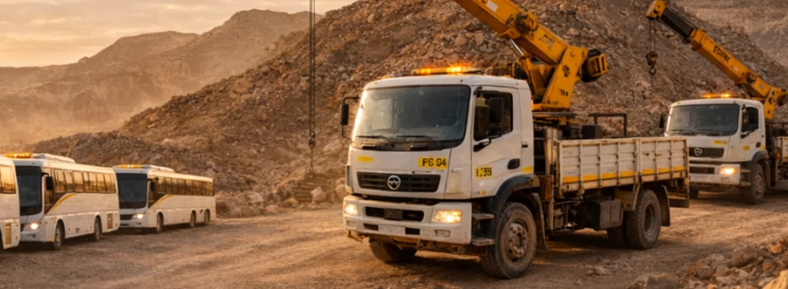
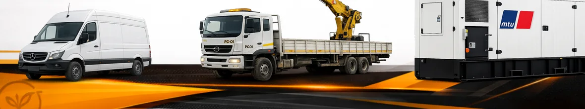
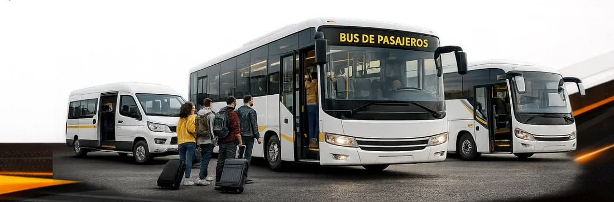
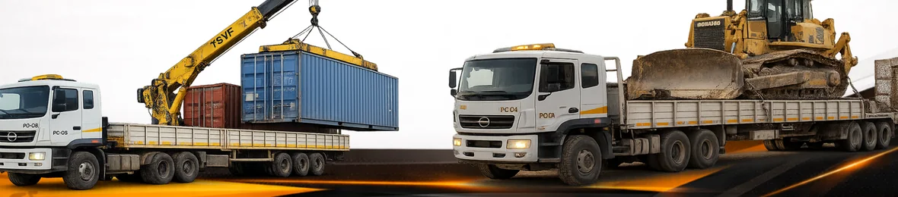
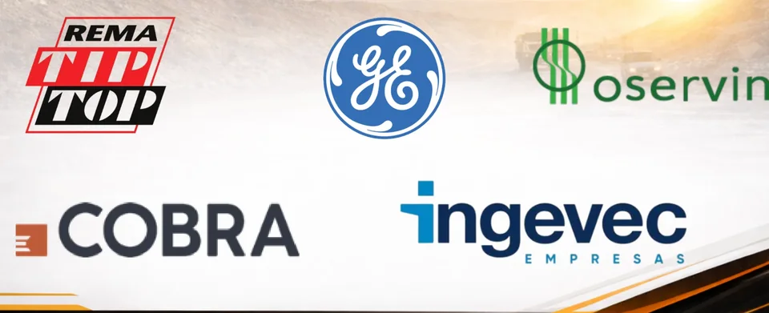

Grupo de empresas con presencia y desarrollo regional.
Transporte y apoyo operacional
Movemos personal, carga y equipos con criterio de faena.
Soluciones para minería e industria en Antofagasta, La Negra y principales faenas del norte de Chile, con foco en seguridad, continuidad operacional y respuesta comercial clara.
Experiencia acumulada del equipo humano en minería y servicios.
Operación enfocada en Antofagasta, La Negra y faenas del norte.
- Transporte de personal con foco en seguridad y cumplimiento.
- Carga industrial, sobredimensionados y equipos especiales.
- Arriendo de maquinarias y recursos para apoyo operacional.

Operación en terrenoSeguridad como base
Servicios orientados al resguardo de personas, equipos y continuidad del trabajo en terreno.
Cumplimiento en faena
Coordinación y ejecución enfocadas en tiempos de traslado, orden operativo y respaldo.
Adaptación al estándar
Operación ajustada a exigencias propias de entornos mineros e industriales del norte.
Apoyo continuo
Disponibilidad comercial y operativa para requerimientos que exigen respuesta sostenida.
Propuesta operacional
Respaldo operativo para servicios que no admiten improvisación.
Integramos transporte de personal, carga y arriendo de equipos con coordinación comercial clara, criterio de faena y foco en continuidad operacional para proyectos mineros e industriales.
Servicios pensados para continuidad operacional
Traslados, apoyo logístico y disponibilidad de equipos orientados a mantener la operación en movimiento.
Conocimiento del entorno del norte de Chile
Base regional, foco en Antofagasta y presencia en La Negra y principales faenas del norte.
Equipo humano con experiencia en minería y servicios
Experiencia acumulada para responder con criterio operativo, seguridad y trato comercial serio.
Nosotros
Presencia regional para resolver traslados, carga y apoyo operacional sin improvisación.
Santa Fe del Norte es un grupo de empresas con desarrollo regional, orientado a transporte de personal, movimiento de carga y arriendo de equipos para minería e industria en el norte de Chile.
El valor no está solo en la disponibilidad de recursos, sino en la capacidad de entender accesos, criticidad, estándar de faena y ventana de trabajo antes de comprometer un servicio.
Más de 5 años construyendo presencia comercial y operativa en el entorno minero e industrial.
Más de 20 años acumulados en minería, servicios y apoyo a operaciones exigentes.

Base operativa
Antofagasta, La Negra y servicios configurados para exigencia de faena.
Centro de coordinación para servicios de personal, carga y equipos.
Nodo relevante para requerimientos industriales y conexión con faenas.
Servicios ajustados a acceso, estándar y dinámica real de terreno.
Coordinación sujeta a criticidad del servicio y evaluación operativa del requerimiento.
Servicios
Capacidades concretas para transporte, carga y equipos.
La oferta se presenta con foco operativo: qué se resuelve, con qué tipo de recursos y bajo qué lógica de cumplimiento.

Transporte de personal
Traslados internos y externos con foco en seguridad y tiempos.
Servicio pensado para faenas que requieren puntualidad, respaldo operativo y adaptación a acreditaciones y exigencias propias del entorno minero.
- Minibuses y buses para traslado de personal.
- Operación alineada a exigencias de faena.
- Coordinación según acceso, ventana y criticidad.

Transporte de carga
Carga industrial, equipos especiales y sobredimensionados.
Soluciones de traslado para cargas operacionales e industriales, con alternativas según tipo de equipo, condición de ruta y complejidad del movimiento.
- Bateas, ramplas y porta contenedor.
- Camas bajas para equipos y maquinaria.
- Cargas especiales y sobredimensionadas.
Arriendo de equipos
Flota, maquinarias y respaldo para sostener la operación.
Disponibilidad de equipos y maquinaria para operaciones mineras e industriales, con posibilidad de servicio con operador según el tipo de requerimiento.
- Sprinter, 4x4, camionetas y camiones 3/4.
- Camiones pluma, generadores y transformadores.
- Recursos para apoyo operacional en terreno.
Por qué elegirnos
Criterios que importan cuando el servicio impacta la operación.
La propuesta comercial se apoya en seguridad operacional, cumplimiento y capacidad para ajustarse a la dinámica de faena sin sobreprometer ni caer en mensajes vacíos.
Seguridad operacional
Procesos y servicios orientados al resguardo de personas, equipos y continuidad de la operación.
Cumplimiento en faena
Coordinación, puntualidad y ejecución confiable para servicios que no admiten improvisación.
Adaptación al estándar del sector
Servicio alineado a exigencias operacionales de la industria minera e industrial del norte.
Respaldo técnico y humano
Equipo con experiencia en terreno y capacidad para responder a requerimientos de alta exigencia.
Antofagasta
Centro de coordinación comercial y salida operativa.
La Negra
Zona clave para industria, montaje y conexión con faena.
Faenas del norte
Atención a requerimientos según acceso, estándar y tipo de servicio.
Cobertura y operación
Cobertura regional enfocada en Antofagasta, La Negra y faena.
La empresa concentra su presencia en Antofagasta, La Negra y principales faenas del norte de Chile, con servicios para transporte de personal, carga industrial y apoyo con equipos.
Despacho y coordinación
La planificación se ajusta a fecha, horario, criticidad y condición del servicio.
Accesos y estándar
Cada requerimiento se evalúa con criterio de faena, no como una cobertura genérica.
Personal, carga y equipos
La operación se configura según volumen, recursos y entorno de trabajo.
Experiencia
Experiencia relacionada con minería, energía y servicios industriales.
La trayectoria comercial presentada por la empresa muestra participación en entornos donde la exigencia no es teórica: mantenimiento industrial, energía, montaje y operación minera.

Referencias visibles para una propuesta más creíble.
- Presencia comercial en minería, energía y montaje industrial.
- Requerimientos donde cumplimiento, acceso y seguridad pesan más que el discurso.
- Servicios que combinan traslado de personal, movimiento de carga y apoyo con equipos.
- Antecedentes y referencias disponibles por canal comercial.
Cómo coordinamos
Menos fricción comercial, más claridad para mover el servicio.
El proceso se plantea para levantar rápido el requerimiento, dimensionar recursos y responder con una conversación comercial más útil.
Levantamiento
Tipo de servicio, ubicación, fecha, horario y criticidad del requerimiento.
Evaluación operativa
Se revisa acceso, estándar de faena, volumen, recursos y modalidad del servicio.
Coordinación comercial
Se responde con factibilidad, alcance inicial y condiciones para avanzar.
Preguntas clave
Información útil antes de cotizar.
Transporte de personal, transporte de carga, arriendo de maquinarias y apoyo a la logística operacional para minería e industria.
La cobertura considera Antofagasta, La Negra y principales faenas del norte de Chile, según el tipo de requerimiento.
Sí. El servicio se plantea para operar bajo exigencias de acceso, acreditación y cumplimiento propias del entorno minero e industrial.
Sí. Según la naturaleza del servicio, se puede considerar arriendo de equipos con operador.
La disponibilidad puede contemplar atención 24/7, pero la modalidad exacta debe confirmarse según criticidad y requerimiento operativo.
Contacto
Coordina tu requerimiento con información operativa clara.
Este formulario concentra la información mínima necesaria para evaluar transporte, carga o equipos sin dar vueltas innecesarias.
Indica el tipo de necesidad y el contexto del trabajo.
La cobertura y la logística cambian según el entorno operativo.
Eso permite dimensionar recursos y coordinar con más precisión.
Solicitud centralizada
Si los canales directos aún no están publicados, el formulario se mantiene como entrada principal para coordinación comercial.